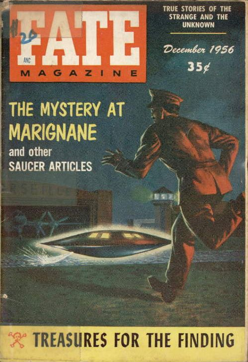

Morris Ketchum Jessup reçoit la 1ère lettre de Carl Meredith Allen.
Au dessus de Hérat (Afghanistan, à 80 km de la frontière
entre l'URSS et l'Iran), observation d'un ovni en forme de rectangle.
Au large de la Nouvelle-Zélande et des îles Fidji, on observe 5 fusées d'origine inconnue dans le ciel, une sorte de sous-marin,
un objet sombre, un navire étrange sans mât ni cheminée, puis une violente explosion dans le ciel.
Un mémoradum intitulé Responsabilités liées aux Objets Volants Non-Indentifiés
assigne à l'ASD l'archivage des dossiers concernant le sujet.
Dans la baie de Goose (Labrador), Bowen, pilote d'un
F-89 et Crawford, observateur radar, observent durant 1 mn un objet rouge et vert circuler rapidement autour de
leur appareil. Ils le voient également au radar Cas Blue
Book n° 3969 non résolu.
A Houston (Texas), l'équipage d'un Super
Constellation de Eastern Airlines voit une lumière blanche intense se déplacer 4 à 5 fois plus vite que leur
appareil. Elle est évitée par le pilote Cas Blue Book n° 3977 non résolu.
Printemps
A McKinney (Texas), Roy Hall, capitaine à la
retraite de l'US Army, Charles Anderson et d'autres témoins
observent à l'aide d'un télescope 6 pouces — d'autres à l'aide d'un télescope 55-200x — un énorme
objet oblong avec 2 lignes autour de son milieu, rester stationnaire durant 6 h Cas Blue Book n°
4050 non résolu.
Le capitaine George T. Gregory succède à Charles Hardin à la tête du projet Blue Book.
A Uniontown (Alabama), des témoins rapportent avoir vu untrès petite forme nuageuse
noire dégager une pluie normale, bien que restreinte à une très petite zone de 200 pieds. Puis le nuage devint
blanc et des poissons vivants commençèrent à en pleuvoir. Les poissons étaient de 3 espèces : poisson-chat, bar
et brème. La plupart sont toujours vivants et les résidants locaux les rassemblent. On raconte qu'ils ont fait
un bon repas.
Les révélations faites au docteur Rolf Alexander en Eté sont dévoilées, sans citer les personnes
concernées.
À Budapest, intervention soviétique.
À Broadmoor (Californie), un singe mort tombe du ciel, s'écrasant à travers le linge suspendu de Mme Faye Swanson.
Crise de Suez.
A 60 miles à l'est de Saint Louis
(Missouri), le capitaine de USAF W. M. Lyons, Chef de la Division de Renseignement (Bureau de
Reconnaissance Météo Aérienne) pilote un jet T-33 d'entraînement. Il voit une lumière orange avec une teinte
bleue voler à travers le ciel durant 2 mn Cas
Blue Book n° 4489 non résolu.
Réélection du président
Dwight David Eisenhower.
A la base de l'USAF de Charleston (Caroline du Sud),
le major D. D. Grimes, navigateur aérien de l'USAF, voit un objet voler au-dessus de l'eau durant 10 mn à une
altitude estimée à 100 pieds Cas Blue Book n° 4543 non résolu.
Couverture de Fate en décembre sur l'observation de l'aéroport de Marignane en

A l'île de Guam, le 1er lieutenant de l'USAF
Ted Brunson pilote un jet d'interception F-86D et observe un objet rond et blanc voler sous son appareil. Il est
incapable de virer aussi sec que l'objet Cas Blue Book n° 4577 non résolu.
Fin de l'année : 6 pilotes du SAC commencent l'entraînement du pilotage de U-2 à Groom LakeRich, Ben R.: Skunk
Works, 1994.
Edward J. Ruppelt publie The Report on Unidentified Flying Objects, un livre
où il fait diverses révélations.
Lors d'une reconnaissance aérienne de l'URSS des glaces au Groenland, l'équipage repère
un appareil discoïdal sans ailes ni antennes, ni hublot, ni gaz d'échappement ou traînées de condensation. Pensant
qu'il s'agit d'un appareil américain, le Tupolev se dissimule dans les nuages. Quand il en ressort 40 mn plus tard,
l'appareil inconnu est toujours à sa gauche. Après 15 mn de vol parallèle, l'engin s'élève et disparaît à une
vitesse incroyable.
Parution en France de Alerte dans le ciel et Black out sur les soucoupes volantes.
Donald Keyoe démissionne de l'armée américaine et fonde à
Washington le NICAP.
Dans une salle de cinéma du New Jersey, durant 6 semaines, des spectateurs sont les
destinataires de 2 messages subliminaux projetés sur l'écran pendant 3 millièmes de s, toutes les .
L'un des messages disait simplement Coca-Cola, et l'autre Mangez du Popcorn. Les ventes de Coca-Cola
augmentent de 18 %, et celles de Popcorn de 57 %. L'organisatrice de cette expérience, une firme de New York, la
Subliminal Projection Co. Inc., annonce qu'elle brevète son procédé et qu'elle sera bientôt prête à
l'offrir aux firmes désireuses de passer de la publicité au cinéma ou à la télévision par les moyens les plus
subtils qu'on ait jamais employés de vanter les mérites d'un produit Newsweek.
Sortie de Earth Versus the Flying Saucers qui s'inspire librement des recherches sur les ovnis menées par
Donald
Edward Keyhoe. Il contient de nombreuses images similaires à celles que Betty
et Barney Hill évoqueront à la suite de leur enlèvement en : le contact sur une route déserte
; la soucoupe apparaissant tout d'abord sous la forme de lumière lointaine ; la réaction de scepticisme du témoin au premier abord ; des
messages subliminaux inaccessibles par un rappel conscient ; la torpeur des témoins ; et l'interférence avec des montres comme indice de
ce qui s'est passé.
Sortie du film U.F.O., distribué par United Artists et produit par Greene-Rouse Productions (Los
Angeles). Lorsque Robert Barrow demande à Clarence Greene pourquoi
il a décidé de faire ce film, ce dernier répond : J'ai vu un ovniRobert Barrow 1976, UFO
Magazine, Février 1977.
Valentin Akkusatov, pilote et navigateur en chef à la base du pôle nord, fait une reconnaissance au-dessus d'une
région de glace stratégique près de Greenland. Alors qu'il sort des nuages pour entrer dans une zone claire, ils
voient à leur gauche un objet inconnu volant en parallèle avec eux. Il a l'apparence d'une grande construction en
forme de poire ou de lentille, avec des extrêmités pulsantes. Pensant voir un appareil inconnu des USA, ils
retournent dans les nuages pour éviter une rencontre. Au bout de 40 mn de vol les nuages s'interrompent à nouveau et
ils voient à nouveau le même objet étrange. Il n'a pas d'ailes, d'antennes ni de fenêtre, et ne dégage aucune fumée.
Ils décident se s'approcher pour voir de plus près, mais l'objet change alors sa course pour conserver sa distance
avec leur appareil. Au bout de 15 mn l'objet fonce vers le haut et disparaît, voyageant à une vitesse "impossible"
Psychic Discoveries behind the Iron Curtain.
(ou ) Henri Lhote découvre la fresque du "Martien de
Tassili" datant de .